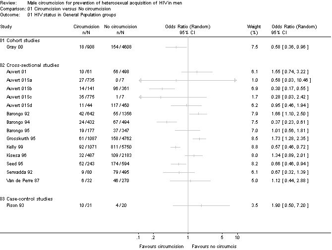

THE CIRCUMCISION REFERENCE LIBRARY
Male circumcision for prevention of heterosexual acquisition of HIV in menSiegfried N, Muller M, Volmink J, Deeks J, Egger M, Low N, Weiss H, Walker S, Williamson P
Date of most recent amendment: 14 May 2003
Date of most recent substantive amendment: 09 April 2003 This review should be cited as: Siegfried N, Muller M, Volmink J, Deeks J, Egger M, Low N, Weiss H, Walker S, Williamson P. Male circumcision for prevention of heterosexual acquisition of HIV in men (Cochrane Review). In: The Cochrane Library, Issue 3, 2003. Oxford: Update Software.
Male circumcision is defined as the surgical removal of all or part of the prepuce (foreskin) of the penis and may be practiced as part of a religious ritual usually conducted shortly after birth or in childhood; as a medical procedure related to infections, injury or anomalies of the foreskin; or as part of a traditional ritual performed as an initiation into manhood (Horizons 00). For over a decade observational studies have suggested an association between male circumcision and HIV infection in males. Most of these studies suggest a protective effect of male circumcision on HIV acquisition in men. Six reviews (Moses 94; De Vincenzi 94; Moses 98; Van Howe 99; Weiss 00; Bailey 01) and one meta-analysis (Weiss 00) of these observational studies have been published, reaching different conclusions on the association between male circumcision and HIV infection. However, search strategies are not clearly described in all the reviews, several focused only on published studies and confounding was not always assessed adequately. The most rigorous is a systematic review and meta-analysis of published studies on HIV-1 infection in sub-Saharan Africa recently published by Weiss et al. (Weiss 00). Adjusted analyses produced an odds ratio (OR) of 0.42 (95% CI: 0.34 to 0.54) for all studies combined (N=15) with an OR of 0.55 (95% CI: 0.42 to 0.72) for population-based cross-sectional studies (N=5) and an OR of 0.24 (95% CI: 0.18 to 0.31) for cross-sectional studies of high-risk groups (N=4). The authors conclude that there is compelling evidence that male circumcision is associated with a reduced risk of HIV infection in sub-Saharan Africa while warning that residual confounding may exist in some studies due to behavioural or biological factors that are unknown or unmeasured. In this Cochrane review we are assessing the likelihood that use of circumcision as an intervention will reduce transmission of HIV infection to men. Thus our review differs in aim from previous reviews which have concentrated on assessing evidence of the association between circumcision and HIV. While randomised controlled trials are the ideal method for proving a causal effect of an intervention, observational studies may also provide weaker evidence of causality when the participants and exposure (circumcision) match what is likely to happen in an intervention programme, and when other confounding factors can be excluded. Known sources of confounding identified by all the above reviews include sexual behaviour, penile hygiene and religion. Circumcision itself may be a proxy measure of the knowledge and behaviour learnt during the process of initiation during which time young men are taught about traditional sexual practices, including monogamy, and penile hygiene. A potential confounder that has not been measured in any study to date, to our knowledge, is the use of vaginal drying agents in female partners of the men. This practice is reportedly common in parts of Africa (Brown 93; Runganga 95; Kun 98) and may result in increased vaginal abrasions and micro-lacerations, possibly facilitating HIV transmission to both men and women. Viral load is increasingly considered to be a crucial factor in HIV transmission (Quinn 00) and may be both an important confounder and an effect modifier. Misclassification of exposure is also an important source of bias given that some studies classify circumcision status by self-report rather than direct observation. Theories to support the biological basis for a protective effect of circumcision on HIV exist. Researchers have noted that the inner aspect of the foreskin is well-supplied with Langerhans cells (Szabo 00) and that in vitro, HIV-1 demonstrates a specific tropism (attraction) for these cells (Soto-Ramirez 96), in particular the CD4 receptors (Hussain 95) on them. CD4 and other HIV co-receptors have been shown to facilitate HIV entry into host cells. According to this theory, circumcision would remove the potential entry site for HIV. However, not all Langerhans cells are removed during circumcision as even after the procedure, there is residual penile mucosa of the glands and there are also Langerhans cells in the penile shaft (Cold 99). In direct contradiction to the above theory, the inner prepuce contains apocrine glands which secrete lysozyme (Fleiss 98). Lysozyme reportedly kills HIV-1 in vitro (Lee-Huang 99), suggesting a protective effect of the foreskin. As the study of the immunological function of the prepuce is not well-developed (Cold 99), caution must be observed when assuming in vitro viral behaviour is equivalent in vivo. In a recent study that used immunofluorescence and image analysis to quantify cells expressing HIV-1 co-receptors, adult foreskin mucosa had greater susceptibility to infection than cervical mucosa or the external surface of the foreskin tissue (Patterson 02). The presence of a sexually transmitted infection (STI) enhances HIV infection and susceptibility (Grosskurth 95a; Cohen 98; Fleming 99). The role circumcision may play in the prevention of transmission of STIs is less certain, although it has been reported that male circumcision is associated with a reduced risk of genital ulcer disease, particularly chancroid and syphilis (Moses 98). It would therefore be valuable to examine the effectiveness of male circumcision for preventing acquisition of STIs through heterosexual intercourse. Should this relationship prove to be temporal, it is possible that circumcision may protect against HIV infection indirectly via decreased STI transmission. Circumcision practices are largely culturally determined and as a result there are strong beliefs and opinions surrounding its practice. It is important to acknowledge that researchers' personal biases and the dominant circumcision practices of their respective countries may influence their interpretation of findings. Given the enormous mortality and morbidity associated with HIV/AIDS, it seems reasonable to fully explore potential prevention measures, including male circumcision. However, promoting or instituting mass circumcision may have profound cultural and social implications and represents a formidable public health challenge (Cohen 00). The risk of surgical wound infection following circumcision must be considered. Of particular concern is the potential negative impact introduction of circumcision may have on current health promotion endeavours to promote sexual behavioural change. If circumcision were actively promoted as an HIV prevention measure, there is some risk that men might seek circumcision in the belief that they can become fully protected from HIV, resulting in a lack of condom use. The following systematic review seeks to inform this debate by presenting the evidence from both published and unpublished studies which examine the association between male circumcision and HIV-1 and HIV-2 infection by heterosexual intercourse.
1) To assess the evidence of an interventional
effect of male circumcision for preventing
acquisition of HIV-1 and HIV-2 by men through
heterosexual intercourse
Types of studies Randomised or quasi-randomized controlled trials. We pre-specified that should data be insufficient, i.e., no randomised controlled trials (RCTs) identified, data from observational studies (e.g. cohort, case-control and cross-sectional studies) would be considered for inclusion in this review according to the HIV/AIDS Cochrane Review Group policy (HIV CRG). Studies performed in general or specific populations and in hospitals or clinics were included. Studies performed in any country and published in any language were included. Studies with historical controls and ecological studies were excluded as these provide unreliable data for determining causation and/or association. Types of participants Heterosexual men included in studies assessing the association between circumcision and HIV-1 and HIV-2. Men are defined as males 12 years of age or older. Types of intervention Male circumcision is defined as removal of the foreskin of the penis either as a medical intervention or via cultural or religious practices that involve cutting off the foreskin. Circumcision status was determined by self- or partner-report or by direct observation. Types of outcome measures The outcome measures were: HIV-1 or HIV-2 infection (incidence or prevalence) in men, based on laboratory results; Any adverse events associated with circumcision were recorded if reported in the studies.
See: Collaborative Review Group search strategy 1. Electronic searching a. MEDLINE online (1966 to 2002) was searched in April 2002 using the following search strategy 1 ("hiv 1"[MeSH Terms] OR "hiv 2"[MeSH Terms]) OR
HIV This yielded 152 abstracts. We did not limit the search by using methodological filters (e.g. only searching for RCTs). [We initially searched linking "HIV" and "risk factors" without limiting the search to "circumcision". However, this search yielded over 12,000 citations and we decided that any additional studies obtained from this search would not justify the additional time and resources to appraise 12,000 abstracts.] We also did not search using terms for "sexually transmitted infections". b. EMBASE online (1966 to 2002) was searched in
February 2002 using the following search
strategy This yielded 143 abstracts. c. An initial online AIDSLINE search (incorporates AIDS meeting and conference abstracts and books) was done in April 2001 and updated on online GATEWAY in August 2001 using the following search strategy #1 HIV-1 [MESH] This yielded a total of 360 abstracts. We were unable to locate many of the authors of abstracts of potentially eligible studies presented during the 1980s and early 1990s. Many of these abstracts may overlap with published studies included in this review, but we were unable to confirm this in many cases. Further assessment of the abstracts is currently underway and results will be included in future updates of the review. 2. All databases included in The Cochrane Library (issue 2, 2002) were searched for *circumcision* and yielded 137 results. These all referred to neonatal circumcision and did not relate to HIV/AIDS. 3. Reference lists 4. Personal contact 5. Excluded Databases
The titles, abstracts and descriptor terms of all downloaded material from the electronic searches were read by NS and MM and irrelevant reports were discarded. All citations identified were then independently inspected by NS and MM to establish relevance of the article according to the pre-specified criteria. Where there was uncertainty as to the relevance of the study, the full article was obtained. 1. Selection of studies 2. Data extraction Administrative details Details of study Characteristics of participants Details of intervention Details of outcomes Details of analysis Details of study ethics
Observational studies: Quality assessment of
observational studies was undertaken using
standardised quality assessment forms developed by
the reviewers specifically for the review (see , ).
Aspects of the quality assessed are listed below.
Some items were only evaluated in cohort studies
(CT), cross-sectional studies (CS) or case-control
studies (CC).
(a) External validity (b) Performance bias (c) Detection bias (d) Attrition bias (e) Selection bias (f) Control of confounding (1) age at baseline The methodological quality of the included cohort, case-control and cross-sectional studies was evaluated independently by NS and MM. One further reviewer (JD) checked the use of quality assessment. Reviewers were not blinded to the names of the authors, institutions, journal of publication or results of the studies. 4. Data synthesis Outcome measures In the protocol we pre-specified that meta-analysis would be conducted if data allowed and where appropriate. However, due to the heterogeneous results this was not appropriate and a narrative synthesis was undertaken. More details are given in the RESULTS section. The results are presented graphically as forest plots in METAVIEW. The Chi-square test for heterogeneity was used to provide an indication of between-study heterogeneity as pre-specified in the protocol. In addition, the degree of heterogeneity observed in the results was quantified using the I-squared statistic (Higgins 02) which can be interpreted as the percentage of variation observed between the studies attributable to between-study differences rather than the play of chance. Stratified analysis Investigations of heterogeneity Sensitivity analysis
See Table of Included studies. Please note that the sixth column: Allocation Concealment, is not applicable to this review as no RCTs were identfied. No completed randomised controlled trials were identified. However, the authors are aware of a RCT already underway in Kisumu, Kenya (Bailey 02) and another trial which was scheduled to commence in Rakai, Uganda in March 2002 (Gray 02). The Kisumu trial will have a completed sample size of 2,276 in total and the Rakai trial will have 2500 men in each of two groups. A third trial (Auvert 03), with a sample size of 3,500, commenced in Gauteng Province in South Africa in 2003. Altogether we identified 35 observational studies which met review inclusion criteria. Sixteen of these studies had been conducted in general population settings, and 19 had been conducted in high-risk population settings. We defined high-risk studies as those studies conducted in settings where HIV infection rate is either known to be high or the setting provides conditions conducive to the spread of HIV. In this review high-risk studies were those conducted in sexually transmitted infection (STI) clinics, hospital and outpatient departments, specific high-risk occupational groupings, such as long-distance truck drivers, and prison settings. The observational studies were of three different designs. Typically their objectives were to investigate multiple risk factors for HIV infection with no specific focus on the role of circumcision. Twenty-five studies were cross-sectional surveys undertaken at a single time point. Participants were tested for HIV at the same time that risk factors were elicited. Five of the studies were cohort incidence studies which followed a group known to be HIV-negative over time, identifying new cases by repeated HIV testing. Risk factors for infection were usually elicited at baseline. Several cohort studies were based on groups identified as HIV-negative in a cross-sectional study. Four studies were of case-control designs, where the prevalence of potential risk factors for HIV in a sample of cases known to be HIV positive was compared with the prevalence in a control sample known to be HIV-negative.
Please see Table of Included Studies under NOTES for a detailed narrative description of the quality for each included study. A table of graphic representation of the quality
of each study is contained in , , and .
Overall study quality was highly variable. Performance bias (misclassification of exposure) may be present in all studies where circumcision status was obtained by self-report rather than direct observation. Fifteen studies assessed circumcision status by self-report and 20 by direct observation. Detection bias was rare across all studies as nearly all studies (n=33) used blinded methods for assessing and confirming HIV status. All five cohort studies included in the review were susceptible to attrition bias as loss-to-follow-up was greater than 20% (Mehendale 96; Lavrey 99), unequal between circumcised and uncircumcised groups (Cameron 89), or unclear (Telzak 93; Gray 00). Selection bias was problematic in all studies, and
results were potentially confounded by other risk
factors for transmission of HIV, such as sexual
behaviour and religion. Circumcised and uncircumcised
groups (in cohort and cross-sectional studies) and
HIV-positive and HIV-negative groups (in case-control
studies) were seldom balanced for all or most of the
ten risk factors that we identified as potential
confounders prior to the quality assessment (see ).
Statistical adjustments for measured confounding
factors were made in 14 of the 35 included studies.
The adjusted confounders differed across studies in
number and type.
We stratified the studies according to whether they were conducted in the general population or whether they were conducted in high risk groups. The studies were further stratified according to study type i.e. cohort, cross-sectional and case-control studies. Our protocol specified that meta-analysis would be conducted within these strata, where appropriate. However, meta-analysis was not performed as many of the studies had a high likelihood of bias and heterogeneous results, suggesting that any overall summary statistic is likely to be misleading. Synthesis focused on describing the direction and consistency of effect, assessing the likelihood of bias, and investigating factors that may explain differences between the results of studies. We used the odds ratio to permit comparison of results of cross-sectional and cohort studies with those of case-control studies, for which the odds ratio is the only valid estimator of effect. Odds ratios greater than 1 indicate increased risk of HIV infection with circumcision and odds ratios less than 1 indicate decreased risk of HIV infection with circumcision. GENERAL POPULATION STUDY RESULTS: We identified one cohort study, 14 cross-sectional
studies and one case-control study conducted in the
general population. The unadjusted results are
graphically depicted in Table 01 in METAVIEW. The
adjusted results are presented in, and .
The single cohort study (Gray 00) (N = 5,516) showed a significant difference in HIV transmission rates between circumcised and uncircumcised men [OR = 0.58; 95% CI: 0.36 to 0.96]. The adjusted OR was 0.53 (95% CI: 0.33 to 0.87). The 14 cross-sectional studies (Van de Perre 87; Barongo 92; Serwadda 92; Barongo 94; Barongo 95; Grosskurth 95; Seed 95; Kisesa 96; Kelly 99; Auvert 01; Auvert 01Sa; Auvert 01Sb; Auvert 01Sc; Auvert 01Sd) had inconsistent findings. Eight studies were in the direction of benefit whilst six were in the direction of harm, with point estimates of odds ratios varying between 0.28 and 1.73. Six studies had statistically significant results, four in the direction of benefit and two in the direction of harm. The test for heterogeneity was highly significant (chi-square = 77.59; df = 13; P-value < 0.00001). Eighty-six percent of the variability observed between the studies was attributable to between-study differences and not random variation. Nine studies reported adjusted odds ratios with eight in the direction of benefit, ranging from 0.26 to 0.80. Use of adjusted results tended to show stronger evidence of an association although they remained heterogenous (chi-square = 75.2; df = 13; P-value < 0.00001), 83% of the variability in adjusted results not being explicable by chance alone. Only one case-control in a general population setting was included (Pison 93). This study was small (N = 51) and found no significant difference in HIV transmission rates between circumcised and uncircumcised men [OR = 1.90; 95% CI: 0.50 to 7.20]. HIGH-RISK GROUP STUDY RESULTS We identified four cohort studies, 12
cross-sectional studies and three case-control
studies conducted in high-risk groups. The unadjusted
results are graphically depicted in Table 02 in
METAVIEW. The adjusted results are presented in , and
.
The four cohort studies (Cameron 89; Telzak 93; Mehendale 96; Lavrey 99) were all in the direction of benefit from circumcision and two of them had statistically significant results. Point estimates varied from odds ratios of 0.10 to 0.39. The chi-square test for between-study heterogeneity was not significant (chi-square = 5.21; df = 3; P-value = 0.16). However, 42% of the variability in results was not explicable by chance. The studies were clinically diverse: two were conducted in Kenya, one in truck drivers (Lavrey 99), and the other in a STI clinic (Cameron 89); the third study was conducted in a STI clinic in India (Mehendale 96) and the fourth in a STI clinic in New York City (Telzak 93). Unadjusted results from 11 cross-sectional studies (Greenblatt 88; Simonsen 88; Diallo 92; Gilks 92; Pepin 92; Bwayo 94; Vaz 95; Mehendale 96a; Nasio 96; Tyndal 96; Lankoande 98) were in the direction of benefit, eight being statistically significant. Estimates of effect varied from odds ratios of 0.10 to 0.66. Between-study heterogeneity was significant with the chi-square = 29.77; df = 10; P-value = 0.0009. Sixty-six percent of the variability in results was not explicable by chance. Four of the cross-sectional studies report adjusted odds ratios ranging from 0.20 to 0.59, and all were significant. One additional study (a href="#S-22">Mbugua 95) only reported an adjusted odds ratio in the direction of benefit which was statistically significant; no data were provided to calculate an unadjusted odds ratio. Three case-control studies (Carael 88; Sassan 96; MacDonald 01) met inclusion criteria and were all in the direction of a protective effect of circumcision on HIV status, two being statistically significant. Point estimates varied from odds ratios of 0.37 to 0.88. The test for between-study heterogeneity was marginal (chi-square = 4.36; df = 2; P-value = 0.11). Fifty-four percent of the variation in results could not be explained by the play of chance. One study (Sassan 96) reported an adjusted OR of 0.50 (95% CI: 0.30 to 0.77). SUB-GROUP ANALYSIS Our pre-specified decisions to stratify results by risk group and study design was supported by the results of the studies. Studies in high-risk groups were significantly more in favour of circumcision than those done in general-population studies (P-value = 0.001 by meta-regression of adjusted results), and differences were observed between study designs for the high-risk studies (P-value = 0.03 for cross-sectional compared with case-control; P-value = 0.06 for cohort compared with case-control). Insufficient numbers of cohort and case-control studies were included to make the same comparison amongst general-population studies. We were able to conduct a sub-group analysis on mode of establishing circumcision status: self-report versus direct observation. Due to the small number of studies in some strata, it was only possible to do this for cross-sectional studies within the general population group (Table 03 METAVIEW). All five cross-sectional studies using direct observation indicated a benefit of circumcision (observed odds ratios ranged from 0.28 to 0.95), while the nine studies based on self-report reported a mixture of benefit (three studies) and harm (six studies) (odds ratios ranging from 0.37 to 1.88). Between-study heterogeneity was suggested in the sub-group of self-reported studies (chi-square = 80.66; df = 8; P-value < 0.00001). The test for heterogeneity was marginal in the direct observation sub-group (chi-square = 7.21; df = 4; P-value = 0.13). The difference between the groups did not reach statistical significance (P-value = 0.12). Results from studies using direct observation were still heterogeneous, 45% of the observed variability not being explicable by chance. We were not able to conduct sub-group analysis on HIV-1 versus HIV-2 status as many studies did not clearly report on the type of HIV, and those studies which measured both often did not differentiate between the two types in analysis. Twenty of the studies assessed HIV-1 status only, one study only included HIV-2, six studies included both HIV-1 and HIV-2 and five studies were unclear whether HIV-1 or HIV-2 was measured. We were also not able to conduct sub-group analysis on background prevalence of HIV in the sampled populations as this information was unavailable for almost all studies. SENSITIVITY ANALYSIS A sensitivity analysis was planned to examine the difference between crude and adjusted estimates of treatment effects. Seventeen studies reported both crude and adjusted effects. In general, adjustment made little difference to the size, direction or significance of effects in eleven studies. The six studies with substantial differences between crude and adjusted results all changed in favour of a protective effect of circumcision. In three, both unadjusted and adjusted results were not significant (Barongo 95; Kisesa 96; Kelly 99). In Barongo 92, while the unadjusted result indicated significant harm (OR = 1.66; 95% CI: 1.10 to 2.50), the adjusted result suggested a benefit (OR = 0.80; 95% CI: 0.50 to 1.30) albeit non-significant. In Serwadda 92 a non-significant unadjusted odds ratio of 0.67 (95% CI: 0.32 to 1.39) became a statistically significant adjusted odds ratio of 0.40 (95% CI: 0.20 to 0.90). In Grosskurth 95a a significant crude odds ratio of 1.73 (95% CI: 1.28 to 2.35) reduced to an adjusted odds ratio of 1.25 although information about its significance was not reported. All these studies were cross-sectional studies in the general population. Use of adjusted results where available made little difference in the observed degree of heterogeneity We had hoped to conduct a sensitivity analysis looking at published versus unpublished studies, but only two unpublished studies (Barongo 95; Kisesa 96) were included in the review. INDIVIDUAL PATIENT DATA ANALYSIS In the light of forthcoming results from RCTs, we determined that it would not be of value to further explore the results of the included studies using IPD analysis. IPD analysis is dependant on obtaining original data. When we contacted authors we enquired whether they would be able to provide us with the original data. In most cases, authors stated that this would not be possible. An IPD analysis would therefore not be feasible. ADVERSE EFFECTS No studies reported on the adverse effects of circumcision. In most studies, exposure to circumcision had taken place during childhood or adolescence, before the studies commenced. CHOICE OF MAJOR PUBLICATION A number of the included studies are described in more than one publication. In some cases, additional analyses conducted after completion of a study were reported in additional publications. Where methods of study design were described in additional publications, we used both reports to inform our data extraction. Where additional analyses were conducted, we chose to include one of the studies as the primary study as described below. Five studies underwent re-analysis to specifically assess the association between male circumcision and HIV prevention, in an article by Urassa et al. (Urassa 97). We used the original articles and reports (two unpublished) to report the methods and quality assessment and to calculate the unadjusted odds ratios of the five included studies (Barongo 92; Barongo 94; Barongo 95; Grosskurth 95a; Kisesa 96). Adjusted odds ratios for the individual studies reported in Urassa 97 are included in our results. An article by Quigley et al. (Quigley 97) reports on a case-control study nested within the cross-sectional study Grosskurth 95a and therefore reports on a sample of the same individuals included in the cross-sectional study. We report only the results of the cross-sectional study to avoid duplication. Information for the included cohort study, Gray 00, was obtained from two articles (Wawer 99; Gray 00). Individuals were followed-up by home visits every 10 months and the study duration was 20 months in the trial reported in Wawer 99. However, cohort surveillance was continued beyond 20 months and was reported in Gray 00. We therefore chose to include the results for the longer follow-up period. An additional analysis of a subsample of the cohort reported in Gray 00 followed HIV-discordant couples over time. These were identified retrospectively in 1999. Linked data on the sero-status of partners was not available during the conduct of the study (1994 to 1998). We therefore did not include this sub-sample as the men were already included in the general population cohort, to avoid duplication.
There are currently no RCTs assessing the effectiveness of male circumcision in preventing HIV acquisition in heterosexual men. However, three large trials, Bailey 02 (N = 2776), Gray 02 (N = 5000) and Auvert 03 (N=3500) are currently underway and are scheduled for completion in 2005/06. Properly conducted RCTs are regarded as the best method of assessing the effectiveness of health care interventions as they generate comparable intervention and non-intervention groups with the only differences between the groups being attributable to the effect of the intervention, or chance (Kleijnen 97). Due to the lack of RCT evidence, and prompted by publication of other reviews that reported that male circumcision provides a protective effect on HIV acquisition in heterosexual men, we assessed the evidence of the benefits of circumcision available from observational studies. Observational studies differ in two important ways from RCTs. First, the intervention (circumcision) did not occur as part of the study, nor was it likely that it occurred directly for reason of possible HIV prevention. Most study participants were likely to be circumcised for cultural or religious reasons. In addition, age of circumcision was not reported in most studies and could have an influence on results. If circumcision was conducted after HIV acquisition a potential protective effect could be missed. Secondly, the studies were not designed to have comparable circumcised and non-circumcised groups. As HIV is related to sexual behaviour, which may in turn be partly determined by culture and religion, strong confounding in these studies seems likely. In assessing the quality of the observational studies we identified ten potentially important confounders that studies would need to ensure were either balanced between circumcised and uncircumcised groups or, if unbalanced, that they were adequately adjusted for. From the tabulation of the quality assessments, it is clear that many studies either did not measure these variables or, if these were reported, they were either not balanced between groups or not adjusted for. Religion was measured as a potential confounder in a number of studies, but in few studies was it either balanced between groups or adequately adjusted for. Of those that did report confounders, choice of included confounders was highly variable across studies. It is important to note that observational studies, unlike RCTs, can only adjust for known confounders, and only then if they are measured without error. The effect of unknown confounders may well be operating in either direction within and across all of the included studies. Misclassification of confounders can greatly hinder the effectiveness of any statistical adjustment procedure (Deeks IP). We observed differences in results according to study design, confirming that study design is an important consideration in the interpretation of results. Also, we noted that the method of ascertaining circumcision status seemed likely to have an influence on study results. How much the results are influenced by other aspects of study quality is unclear, but overall the studies included in this review fail to meet many of our pre-specified quality criteria. Whilst they may have been the best studies that could have been undertaken in the circumstances, there is potential for bias, which can act in either direction and explain some of the observed heterogeneity in results. The studies from high-risk groups included in this review do report a powerful protective effect of circumcision, measured by both unadjusted and adjusted odds ratios. More mixed results were reported for the general population. Although use of adjusted results tended to show stronger evidence of an association than the unadjusted results in general population studies, between-study heterogeneity remained significant. Population studies undertaken using direct observation were more in favour of circumcision. As self-report is known to be a poor means of assessing exposure, it would seem reasonable to favour the results generated from those studies using direct observation only. Self-report could affect the results in either direction depending on what the reason for over- or under-reporting in a particular setting is. However, other aspects of quality in these studies may be compromised: for example, four of the five included studies in this sub-group were not rated highly on external validity, potentially introducing bias that may affect results in either direction. While we have followed a rigorous protocol during the conduct of this review, the review is still subject to a number of limitations and may be prone to indexing bias, publication bias and reporting bias. Our search strategy was limited to the term "circumcision" which yielded abstract numbers ranging from 143 to 360 abstracts depending on the database searched. However, when the search included the broader term "risk factors", the yield was over 12,000 abstracts. It was not considered feasible to appraise this many abstracts on a balance between yield and time. It is therefore possible that studies appraising circumcision, but not indexed as such, may have been missed. The search of conference proceedings provided a yield of 360 abstracts, mostly of presentations from the International AIDS Conferences. Although some of these appeared to overlap with published articles, we have had difficulty confirming this with authors, especially those from the 1980s and early 1990s. It is therefore highly likely that some studies presented at these conferences have not been published and are therefore not included in our review. We plan to continue to pursue this for future updates of the review. We believe the presence of reporting bias is a major limitation of our review and, indeed, of other previously published reviews. Unless we were able to contact researchers to obtain missing data, we relied on the data reported in the article. In many cases reporting was unclear regarding factors relating to study quality (e.g., participation rates, ascertainment of circumcision status, measurement of confounding variables and whether these were balanced and/or adjusted for), provision of actual numbers, percentages and details of statistical analyses. Some studies may have included circumcision as a risk factor and, on finding it to be non-significant, failed to report on it. In general, we chose to report unclear issues as such rather than making assumptions. Where necessary, we have been explicit about assumptions that we have had to make. The strength of the review could be greatly improved if it were possible to contact all researchers and obtain original data. Despite the above limitations, the generally positive results of these studies do indicate that further urgent evaluation of circumcision is required. However, as the observed results could be explained by likely confounding, randomised trials are essential before circumcision is implemented as a public health intervention. This will also ensure that the use of male circumcision as a preventive strategy does more good than harm. The implementation of circumcision as a public health intervention will encounter cost, both financial and in terms of potential personal harm; no adverse effects are reported in this review only because none of the observational studies investigated them. Feasibility issues of implementation are beyond the scope of this review but need to be carefully considered. Obtaining individual participant data for each study would have allowed us to perform a standard adjustment for confounding factors on all studies, if appropriate variables had been measured. Whilst this could potentially improve the quality of the included studies, it would not resolve the major problems inherent to observational studies. In the light of forthcoming results from RCTs, the value of investing time obtaining and re-analysing individual patient data sets for the included studies is doubtful. The review raises a number of important points that future trial designs should take into account. 1. Age at circumcision varied from at birth to early adulthood, both across and within studies. In a trial, age at circumcision should be in a narrow range. Short-term trials will need to be conducted on sexually active adults and longer trials on pre-adolescents to adequately assess the effect on HIV acquisition. 2. Risk of acquisition of HIV depends on sexual practices that may be culturally or religiously linked. A trial design will need to recruit sufficient numbers across diverse cultural and religious groups to account for this. 3. Trials must measure sexual practices, especially any changes from pre-circumcision behaviour, to evaluate how sexual behaviour after circumcision affects risk of exposure to HIV. 4. Trials must measure and report any adverse effects of circumcision. In conclusion, whilst the positive results of the observational studies indicate that circumcision is an intervention worth evaluating in RCTs, the current quality of evidence is insufficient to consider implementation of circumcision as a public health intervention.
Implications for practice Despite the positive results of a number of observational studies, there are not yet sufficient grounds to conclude that male circumcision, as a preventive strategy for HIV infection, does more good than harm. The results of current ongoing RCTs will need to be carefully considered before circumcision is implemented as a public health intervention for prevention of sexually transmitted HIV. Implications for consumers Implications for research Randomised trials assessing the effects of male circumcision across diverse cultural and religious groups are urgently needed. Short-term trials will need to be conducted on sexually active adults and longer trials on pre-adolescents to adequately assess the effect on HIV acquisition. Trials must measure sexual practices, especially any changes from pre-circumcision behaviour, to evaluate whether the benefit of circumcision occurs through changed sexual behaviour or the absence of the foreskin.
Gail Kennedy and George Rutherford of the HIV/AIDS
Group for their ongoing support and advice
Nandi Siegfried, Martha Muller, Jimmy Volmink, Jon Deeks, Nicola Low, Sarah Walker and Paula Williamson have not been involved in previous research into the subject and are not currently involved in other related research. Helen Weiss and Matthias Egger have researched circumcision previously in publications in the public domain. No reviewers are part of the trial groups investigating the link between circumcision and HIV.
Characteristics of included studies |
|
Characteristics of excluded studies
|
Characteristics of ongoing studies
|
| REFERENCES |
References to studies included in this review
*Auvert B, Ballard R, Campbell C,
Caraël M, Carton M, Fehler G, Gouws E, MacPhail C,
Taljaard D, Van Dam J, Williams B. HIV infection among
youth in a South African mining town is associated with
herpes simplex virus-2 seropositivity and sexual
behaviour. AIDS 2001;15(7):885-98.
*Auvert B, Buvé A, Lagarde E,
Kahindo M, Chege J, Rutenberg N, Musonda R, Laourou M, Akam
E, Weiss HA, for the Study Group on the Heterogeneity of
HIV Epidemics in African Cities. Male circumcision and HIV
infection in four cities in sub-Saharan Africa. AIDS
2001;15 (suppl 4):S31-S40.
*Auvert B, Buvé A, Lagarde E,
Kahindo M, Chege J, Rutenberg N, Musonda R, Laourou M, Akam
E, Weiss HA, for the Study Group on the Heterogeneity of
HIV Epidemics in African Cities. Male circumcision and HIV
infection in four cities in sub-Saharan Africa. AIDS
2001;15 (suppl 4):S31-S40.
*Auvert B, Buvé A, Lagarde E,
Kahindo M, Chege J, Rutenberg N, Musonda R, Laourou M, Akam
E, Weiss HA, for the Study Group on the Heterogeneity of
HIV Epidemics in African Cities. Male circumcision and HIV
infection in four cities in sub-Saharan Africa. AIDS
2001;15 (suppl 4):S31-S40.
*Auvert B, Buvé A, Lagarde E,
Kahindo M, Chege J, Rutenberg N, Musonda R, Laourou M, Akam
E, Weiss HA, for the Study Group on the Heterogeneity of
HIV Epidemics in African Cities. Male circumcision and HIV
infection in four cities in sub-Saharan Africa. AIDS
2001;15 (suppl 4):S31-S40.
*Barongo LR, Borgdorff MW, Mosha FF,
Nicoll A, Grosskurth H, Senkoro KP, Newell JN, Changalucha
J, Klokke AH, Killewo JZ, Velema JP, Hayes RJ, Dunn DT,
Muller LAS, Rugemalila JB. The epidemiology of
HIV-1 infection in urban areas, roadside settlements and
rural villages in Mwanza Region, Tanzania. AIDS
1992;6(12):1521-8.
*Barongo LR, Borgdorff MW, Newell JN,
Senkoro KP, Klokke AH, Changalucha J, Deville W, Velema JP,
Coutinho RA, Gabone RM. Intake of a cohort study of urban
factory workers in Northwest Tanzania. Tropical and
Geographical Medicine 1994;46(3):157-62.
*Barongo LR, Senkoro KP, Boerma JT. HIV
infection and sexual behaviour in four fishing villages on
Lake Victoria, Tanzania. TANESA Working Paper No. 2 June
1995.
*Bwayo J, Plummer F, Omari M, Mutere A,
Moses S, Ndinya-Achola J, Velentgas P, Kreiss J. Human
immunodeficiency virus infection in long-distance truck
drivers in East Africa. Archives of Internal Medicine
1994;154:1391-6.
*Cameron DW, D'Costa LJ, Maitha GM, Cheang
M, Piot P, Simonsen JN, Ronald AR, Gakinya MN,
Ndinya-Achola JO, Brunham RC, Plummer FA. Female to male
transmission of human immunodeficiency virus type 1: risk
factors for seroconversion in men. The Lancet
1989:404-7.
*Caraël M, Van De Perre PH, Lepage
PH, Allen S, Nsengumuremyi F, Van Goetham C, Ntahorutaba M,
Nzaramba D, Clumeck N. Human immunodeficiency virus
transmission among heterosexual couples in Central Africa.
AIDS 1988;2(3):201-5.
*Diallo MO, Ackah AN, Lafontaine MF,
Doorly R, Roux R, Kanga JM, Heroin P, De Cock KM. HIV-1and
HIV-2 infections in men attending sexually transmitted
disease clinics in Abidjan, Côte d'Ivoire. AIDS
1992;6(6):581-5.
*Gilks CF, Otieno LS, Brindle RJ, Newnham
RS, Lule GN, Were JBO, Simani PM, Bhatt SM, Okelo GBA,
Waiyaki PG, Warrell DA. The presentation and outcome of
HIV-related disease in Nairobi. Quarterly Journal of
Medicine 1992;New Series 82(297):25-32.
*Gray RH, Kiwanuka N, Quinn TC, Sewankambo
NK, Serwadda D, Wabwire Mangen F, Lutalo T, Nalugoda F,
Kelly R, Meehan M, Chen MZ, Li C, Wawer MJ, for the Rakai
Project Team. Male
circumcision and HIV acquisition and transmission: cohort
studies in Rakai, Uganda. AIDS 2000;14:2371-81.
*Greenblatt RM, Lukehart SA, Plummer FA,
Quinn TC, Critchlow CW, Ashley RL, D'Costa LJ,
Ndinya-Achola JO, Corey L, Ronald AR, Holmes KK. Genital
ulceration as a risk factor for human immunodeficiency
virus infection. AIDS 1988;2(1):47-50.
*Grosskurth H, Mosha F, Todd J, Senkoro K,
Newell J, Klokke A, Changalucha J, West B, Mayaud P,
Gavyole A, Gabone R, Mabey D, Hayes R. A community trial
of the impact of improved sexually transmitted disease
treatment on the HIV epidemic in rural Tanzania: 2.
Baseline survey results. AIDS 1995;9(8):927-34.
*Kelly R, Kiwanuka N, Wawer MJ, Serwadda
D, Sewankambo NK, Wabwire-Mangen F, Li C, Konde-Lule JK,
Lutalo T, Makumbi F, Gray RH. Age of male circumcision and
risk of prevalent HIV infection in rural Uganda. AIDS
1999;13:399-405.
*Kisesa sero-survey team. Kisesa
sero-survey 1994-1995. Report of basic findings. TANESA
Internal Report Series No. 8 March 1996.
*Lankoande S, Meda N, Sangare L, Compaore
IP, Catraye J, Zan S, van Dyck E, Cartoux M, Soudre R. HIV
infection in truck drivers in Burkino Faso: a
seroprevalence study [L'infection a VIH chez les chauffeurs
routiers au Burkina Faso: une enquete de seroprevalence].
Médecine Tropicale 1998;58(1):41-5.
*Lavreys L, Rakwar JP, Thompson ML,
Jackson DJ, Mandaliya K, Chohan BH, Bwayo JJ, Ndinya-Achola
JO, Kreiss JK. Effect of circumcision on incidence of human
immunodeficiency virus type 1 and other sexually
transmitted diseases: a prospective cohort study of
trucking company employees in Kenya. The Journal of
Infectious Diseases 1999;180:330-6.
*MacDonald KS, Malonza I. Chen DK,
Nagelkerke NJD, Nasio JM, Ndinya-Achola J, Bwayo JJ, Sitar
DS, Aoki FY, Plummer FA. Vitamin A and risk of HIV-1
seroconversion among Kenyan men with genital ulcers. AIDS
2001;15(5):635-9.
*Mbugua GG, Muthami LN, Mutura CW, Oogo
SA, Waiyaki PG, Lindan CP, Hearst N. Epidemiology of HIV
infection among long distance truck drivers in Kenya. East
African Medical Journal 1995;72(8):515-8.
*Mehendale SM, Shepherd ME, Divekar AD,
Gangakhedkar RR, Kamble SS, Menon PA, Yadav R, Risbud AR,
Paranjape RS, Gadkari DA, Quinn TC, Bollinger RC, Rodrigues
JJ. Evidence for high prevalence & rapid transmission
of HIV among individuals attending STD clinics in Pune,
India. Indian Journal of Medical Research
1996;104:327-35.
*Mehendale SM, Shepherd ME, Divekar AD,
Gangakhedkar RR, Kamble SS, Menon PA, Yadav R, Risbud AR,
Paranjape RS, Gadkari DA, Quinn TC, Bollinger RC, Rodrigues
JJ. Evidence for high prevalence & rapid transmission
of HIV among individuals attending STD clinics in Pune,
India. Indian Journal of Medical Research
1996;104:327-35.
*Nasio JM, Nagelkerke NJD, Mwatha A, Moses
S, Ndinya-Achola JO, Plummer FA. Genital ulcer disease
among STD clinic attenders in Nairobi: association with
HIV-1 and circumcision status. International Journal of STD
& AIDS 1996;7:410-4.
*Pépin J, Quigley M, Todd J, Gaye
I, Janneh M, Van Dyck E, Piot P, Whittle H. Association between
HIV-2 infection and genital ulcer diseases among male
sexually transmitted disease patients in The Gambia.
AIDS 1992;6(5):489-93.
*Pison G, Le Guenno B, Lagarde E, Enel C,
Seck C. Seasonal migration: a risk factor for HIV infection
in rural Senegal. Journal of Acquired Immune Deficiency
Syndromes 1993;6:196-200.
*Sassan-Morokro M, Greenberg AE, Coulibaly
IM, Coulibaly D, Sidibé K, Ackah A, Tossou O, Gnaore
E, Wiktor SZ, De Cock KM. High rates of sexual contact with
female sex workers, sexually transmitted diseases, and
condom neglect among HIV-infected and uninfected men with
tuberculosis in Abidjan, Côte d'Ivoire. Journal of
Acquired Immune Deficiency Syndromes and Human
Retrovirology 1996;11(2):183-7.
*Seed J, Allen S, Mertens T, Hudes E,
Serufilira A, Carael M, Karita E, Van de Perre P,
Nsengumuremyi F. Male circumcision, sexually transmitted
disease , and risk of HIV. Journal of Acquired Immune
Deficiency Syndromes and Human Retrovirology
1995;8(1):83-90.
*Serwadda D, Wawer MJ, Musgrave SD,
Sewankambo NK, Kaplan JE, Gray RH. HIV risk factors in
three geographic strata of rural Rakai District, Uganda.
AIDS 1992;6(9):983-9.
*Simonsen JN, Cameron DW, Gakinya MN,
Ndinya-Achola JO, D'Costa LJ, Karasira P, Cheang M, Ronald
AR, Piot P, Plummer FA. Human Immunodeficiency virus
infection among men with sexually transmitted diseases. New
England Journal of Medicine 1988;319:274-8.
*Telzak EE, Chiasson MA, Bevier PJ,
Stoneburner RL, Castro KG, Jaffe HW. HIV-1 seroconversion
in patients with and without genital ulcer disease. Annals
of Internal Medicine 1993;119(12):1181-6.
*Tyndall MW, Ronald AR, Agoki E, Malisa W,
Bwayo JJ, Ndinya-Achola JO, Moses S, Plummer FA. Increased
risk of infection with human immunodeficiency virus type 1
among uncircumcised men presenting with genital ulcer
disease in Kenya. Clinical Infectious Diseases
1996;23:449-53.
*Van de Perre P, Carael M, Nzaramba D,
Zissis G, Kayihigi J, Butzler JP. Risk factors for HIV
seropositivity in selected urban-based Rwandese adults.
AIDS 1987;1(4):207-11.
*Vaz RG, Gloyd S, Folgosa E, Kreiss J.
Syphilis and HIV infection among prisoners in Maputo,
Mozambique. International Journal of STD & AIDS
1995;6:42-6.
References to studies excluded from this review
*Bailey RC, Neema S, Othieno R. Sexual
behaviors and other HIV risk factors in circumcised and
uncircumcised men in Uganda. Journal of Acquired Immune
Deficiency Syndromes 1999;22(3):294-301.
*Bongaarts J, Reining P, Way P, Conant F.
The relationship between male circumcision and HIV
infection in African populations. AIDS
1989;3(6):373-7.
*Gomo E, Chibatamoto PP, Chandiwana SK,
Sabeta CT. Risk factors for HIV infection in a rural cohort
in Zimbabwe: a pilot study. Central African Journal of
Medicine 1997;43(12):350-4.
Halperin DT, Bailey RC. Male circumcision
and HIV infection: ten years and counting. The Lancet
1999;354:1813-5.
*Harrison LH, da Silva APJ, Gayle HD,
Albino P, George R, Lee-Thomas S, Rayfield MA, Del Castillo
F, Heyward WL. Risk factors for HIV-2 infection in
Guinea-Bissau. Journal of Acquired Immune Deficiency
Syndromes 1991;4(11):1155-60.
*Heyns CF, van Vollenhoven P, Steenkamp
JW, Allen FJ. Cancer of the penis - a review of 50
patients. SAJS 1997;35(3):120-4.
*Hira SK, Kamanga J, Macuacua R, Mwansa N,
Cruess DF, Perine PL. Genital ulcers and male circumcision
as risk factors for acquiring HIV-1 in Zambia. The Journal
of Infectious Diseases 1990;161:584-5.
References to studies awaiting assessment
NI Kumwenda, TE Taha, DR Hoover, D
Markakis, GN Liomba, JD Chipwangi, DD Celentano. HIV-1
incidence among male workers at a sugar estate in rural
Malawi. Journal of Acquired Immune Deficiency Syndrome
2001;27:202-8.
References to ongoing studies
Study contact information not provided.
Contact reviewer for more information. Gauteng, South
Africa: 3 sites. Ongoing study. 2003.
Study contact information not provided.
Contact reviewer for more information. Kisumu, Kenya.
Ongoing study. May 2001.
Study contact information not provided.
Contact reviewer for more information. Rakai, Uganda.
Ongoing study. Pilot: October 2002 Trial: March 2002.
Additional references
Bailey RC, Plummer FA, Moses S. Male
circumcision and HIV prevention: current knowledge and
future research directions. The Lancet Infectious Diseases
2001;1:223-30.
Brown JE, Ayowa OB, Brown RC. Dry and tight - sexual
practices and potential AIDS risk in Zaire. Social
Science and Medicine 1993;37:989-94.
Cohen MS. Preventing sexual transmission
of HIV - new ideas from sub-Saharan Africa. The New England
Journal of Medicine 2000;342:970-2.
Cohen MS. Sexually transmitted diseases
enhance HIV transmission: no longer a hypothesis. The
Lancet 1998;351 Suppl:S5-S7.
Cold CJ, Taylor JR. The prepuce.
British Journal of Urology 1999;83:34-44.
De Vincenzi ID, Mertens T. Male circumcision: a
role in HIV prevention?. AIDS 1994;8:153-60.
Deeks JJ, Dinnes JD, Amico RA, Sowden AJ,
Sakarovitch C, Song F, Petticrew M, Altman DG. Evaluating
non-randomised intervention studies. Health Technology
Assessment (in press).
Fleiss PM, Hodges FM, Van Howe RS. Immunological function
of the human prepuce. Sexually Transmitted Infections
1998;74:364-7.
Fleming DT, Wasserheit JD. From epidemiological
synergy to public health policy and practice: the
contribution of other sexually transmitted diseases to
sexual transmission of HIV infection. Sexually
Transmitted Infections 1999;75:3-17.
Grosskurth H, Mosha F, Todd J, Mwijarubi
E, Klokke E, Senkoro K, Mayaud P, Changalucha J, Nicoll A,
ka-Gina G, Newell J, Mugeye K, Mabey D, Hayes R. Impact of improved
treatment of sexually transmitted diseases on HIV
infections in rural Tanzania: randomised controlled
trial. The Lancet 1995;346:530-6.
Higgins JP, Thompson SG. Quantifying
heterogeneity in a meta-analysis. Statistics in Medicine
2002;21(11):1539-58.
http://hivinsite.ucsf.edu/cochrane/
Horizons. Report: Male circumcision and
HIV prevention: Directions for future research. Washington
DC: Office of Health and Nutrition, Global Bureau, U.S.
Agency for International Development. 2000.
Hussain LA, Lehner T. Comparative
investigation of Langerhans' cells and potential receptors
for HIV in oral, genitourinary and rectal epithelia.
Immunology 1995;85:465-84.
J Kleijnen, P Gotzsche, RA Kunz, AD Oxman,
I Chalmers. In: A Maynard, I Chalmers, editor(s).
Non-random reflections of health services research. 1st
Edition. London: BMJ Publishing Group, 1997:93-106.
Kun KE. Vaginal drying agents and
HIV transmission. Family Planning Perspectives
1998;24:93-4.
Lee-Huang S, Huang PL, Sun Y, Kung HF,
Blithe DL, Chen HC. Lysozyme and RNAses
as anti-HIV components in Beta-core preparations of human
chorionic gonadotropin. Proceedings of the National
Academy of Science (USA) 1999;96:2678-81.
Moses S, Plummer FA, Bradley JE,
Ndiya-Achola JO, Nagelkerke NJD, Ronald AR. [The association between
lack of male circumcision and risk for HIV infection: a
review of the epidemiological data]. Sexually
Transmitted Diseases 1994;21:201-10.
Moses S, Bailey RC, Donald AR. Male
circumcision: assessment of health benefits and risks.
Sexually Transmitted Infections 1998;74:368-73.
Patterson. . American Journal of Pathology
2002;161.
Quigley M, Munguti K, Grosskurth H, Todd
J, Mosha F, Senkoro K, Newell J, Mayaud P, ka-Gina G,
Klokke A, Mabey D, Gavyole A, Hayes R. Sexual behaviour
patterns and other risk factors for HIV infection in rural
Tanzania: a case-control study. AIDS
1997;11(2):237-48.
Quinn TC, Wawer MJ, Sewankambo N, Serwadda
D, Li C, Wabwire-Mangen F, Meehan MO, Lutalo T, Gray RH. Viral load and heterosexual transmission of
human immunodeficiency virus type 1. The New England
Journal of Medicine 2000;342:921-9.
Runganga OA, Kasule J. The vaginal use of
herbs/substances: an HIV transmission facilitatory
factor?. AIDS Care 1995;7:639-45.
Soto-Ramirez LE, Renjifo B, McLane MF,
Marlink R, O'Hara C, Sutthent R, Wasi C, Vithayasi P,
Vithayasai V, Apichartpiyakul C, Auewarakul P, Cruz VP,
Chui D-S, Osathanondh R, Mayer K, Lee T-H, Essex M. HIV-1
Langerhans' cell tropism with heterosexual transmission of
HIV. Science 1996;271:1291-3.
Szabo R, Short RV. How does male
circumcision protect against HIV infection?. British
Medical Journal 2000;320:1592-4.
M Urassa, J Todd, T Boerma, Hayes R,
Isingo R. Male circumcision and susceptibility to HIV
infection among men in Tanzania. AIDS 1997;11:73-80.
Van Howe RS. Circumcision and HIV
infection: review of the literature and meta-analysis.
International Journal of STD and AIDS 1999;10:8-16.
Wawer MJ, Sewankambo NK, Serwadda D, Quinn
TC, Paxton LA, Kiwanuka N, Wabwire-Mangen F, Li C, Lutalo
T, Nalugoda F, Gaydos CA, Moulton LH, Meehan MO, Ahmed S,
the Rakai Project Study Group, Gray RH. Control of sexually
transmitted diseases for AIDS prevention in Uganda: a
randomised community trial. The Lancet
1999;353:525-35.
Weiss HA, Quigley MA, Hayes R. Male
circumcision and risk of HIV infection in sub-Saharan
Africa: a systematic review and meta-analysis. AIDS
2000;14:2361-70.
| GRAPHS |
|
|||||||||||||||||||||||||
| COVER SHEET |
|
| SOURCES OF SUPPORT |
External sources of support
Internal sources of support
| SYNOPSIS |
Male circumcision for prevention of heterosexual acquisition of HIV in men
Circumcision in heterosexual men is associated with lower rates of HIV infection. This association is strongest in groups at high-risk of HIV infection. However there are no trials to show whether male circumcision as an intervention reduces HIV infection.
Male circumcision is the surgical removal of the foreskin of the penis. It is a common religious or traditional ritual, and is sometimes done for medical reasons. It is not known if the foreskin affects sexual transmission of infection. Circumcision may be an indicator of men affected by other religious or traditional practices which lower the risk of HIV. The review found that men who have already been circumcised have lower rates of HIV infection than uncircumcised men. However, there is no strong evidence of the effects of male circumcision to try to reduce the spread of HIV/AIDS. Trials are underway.
| GRAPHS |
|  |
http://www.cirp.org/library/disease/HIV/cochrane2003/